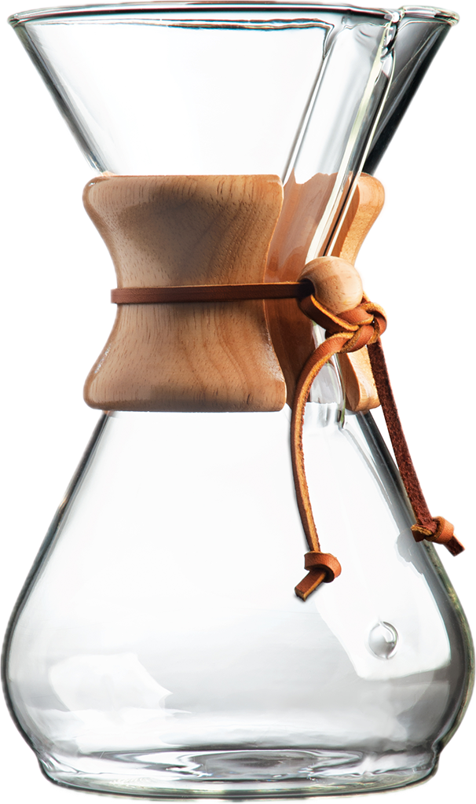

The Coffee Brewing Comparison!
Introduction to Coffee
For many, coffee is an essential good that
has very few substitutes for an early morning boost.
Despite widespread usage a large portion of coffee drinkers rely on just two methods
of obtaining their fix coffee shops or drip machines.
Recently there has been a trend of at-home coffee brewing without using drip machines,
where coffee enthusiasts experimented using pour overs, coffee percolators, and modding
espresso machines. This website will give a general overview to several brewing methods of
coffee for anyone interested in brewing better coffee
at home.
Page made with the help of Feline Supervisor: Momo the Tuxedo Cat
Brewing
Set-up is everything!
There are several factors to consider when choosing their first coffee maker,
with the most important being how much time someone would like to invest in
their daily cup of joe.
James Hoffman’s A Beginner's Guide To Coffee
videos are an amazing source
of information regarding everything from techniques to where to get the fresh
and wonderful coffee beans.
Four Simple-ish Methods!
Pour Over
Pour-overs coffee is perhaps the most similar to the usual drip coffee
machines people are familiar with in office spaces and diners. However,
there is much more control involved with pour over coffees allowing for the development
of recipes and technique. Such techniques often create a balanced and “clean” cup of coffee that
is pleasing to almost everyone depending on the beans and recipe.
Aeropress
The Aeropress is another manual brewer, featuring a cylindrical chamber
where coffee grounds can be immersed in hot water for a short period of time and pressed out
resulting in a cup that is more rich and full-bodied than those possible by pour-over coffees.
Moka Pot
The Moka Pot is a stovetop coffee maker that brews coffee by passing boiling water pressurized by steam
through ground coffee. It is a staple in Italian households and is known for its strong and rich coffee.
Espresso Machine
Espresso machines are the most expensive and complex of the four methods,
but they are also the most versatile. Espresso machines can make a variety of drinks
including lattes, cappuccinos, and macchiatos.
Discover the different ways to brew coffee:

The Chemex
A glass pour-over style coffee maker that uses a thick paper filter to brew crisp, clean coffee.
Hario V60
Pour-over coffee maker made in Japan designed to rest on cup of coffee, allowing for easier clean up.
Aeropress
A manual brewer that uses a plunger to push water through coffee beans in order to infuse pressure into the coffee .
Moka Express
An italian stovetop coffee maker intended to replicate the strength of espresso at home.
The Breville Bambino Plus
A domestic grade esspress machine, using high-pressure and heat to create concentrated espresso shots. Model shown has an automatic steam milk function
Grind Size Comparison
Just as every coffee brewer is different, the size of the grind these machines
take are different for each method of brewing. The grind size is important as it
determines the rate at which water can passes through the coffee grounds, ultimately effecting
the taste and flavor of the coffee. While some people own a manaul or electric offeegrinder,
many people rely on either pre-ground coffee or grind their coffee at the store if possible.
| Model |
Grind Size |
Price |
Material |
Link |
| Chemex |
Medium-Fine |
$30-50 |
Glass |
Chemex Website |
| Hario V60 |
Medium |
$10-20 |
Plastic, Glass or Ceramic |
Hario USA Website |
| Aeropress |
Medium-Fine |
$30-40 |
Plastic |
Aeropress Website |
| Mokapot |
Fine |
$30-40 |
Aluminium |
Moka Express Website |
| Breville Bambino |
Very fine |
$200+ |
Stainless Steel |
Berville Website |